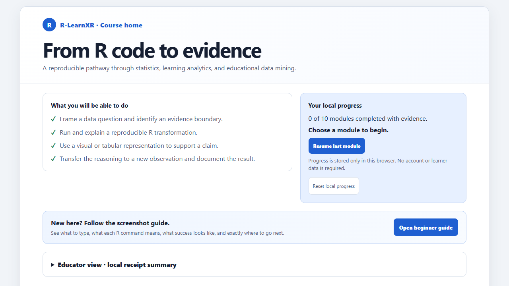
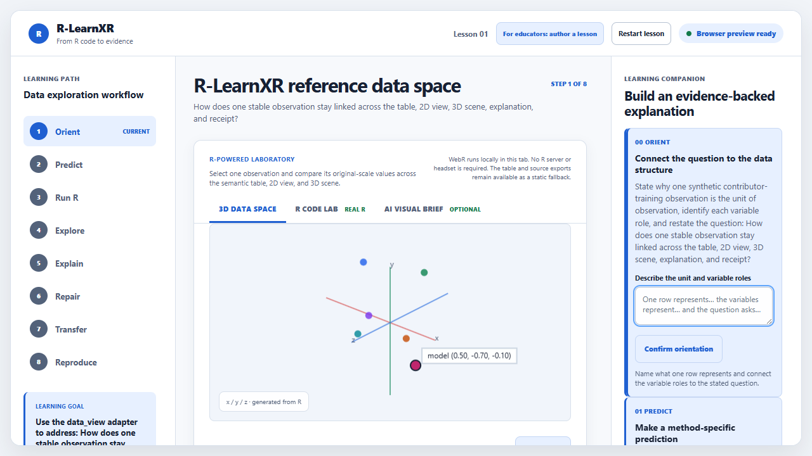
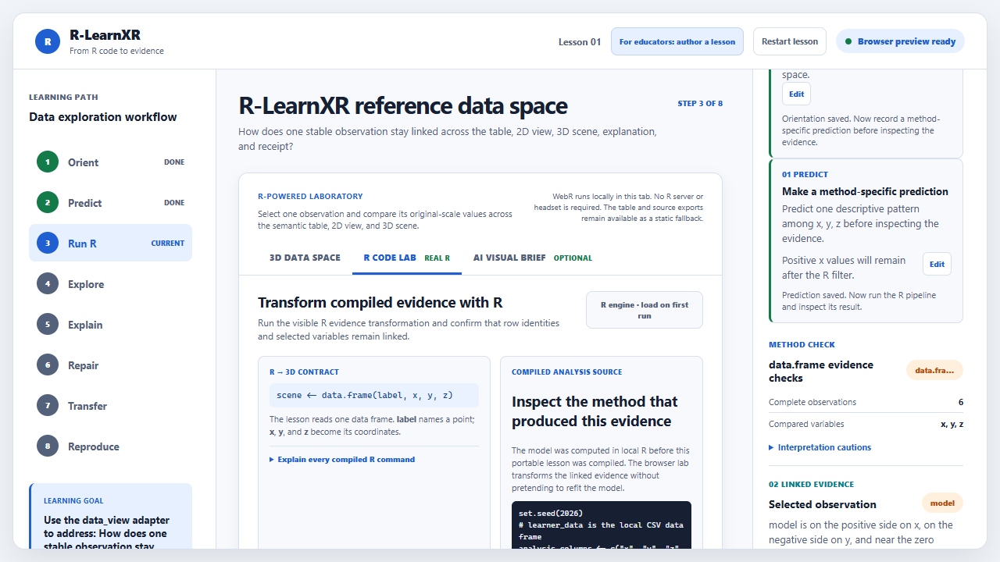
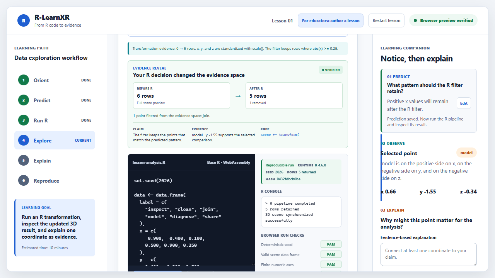
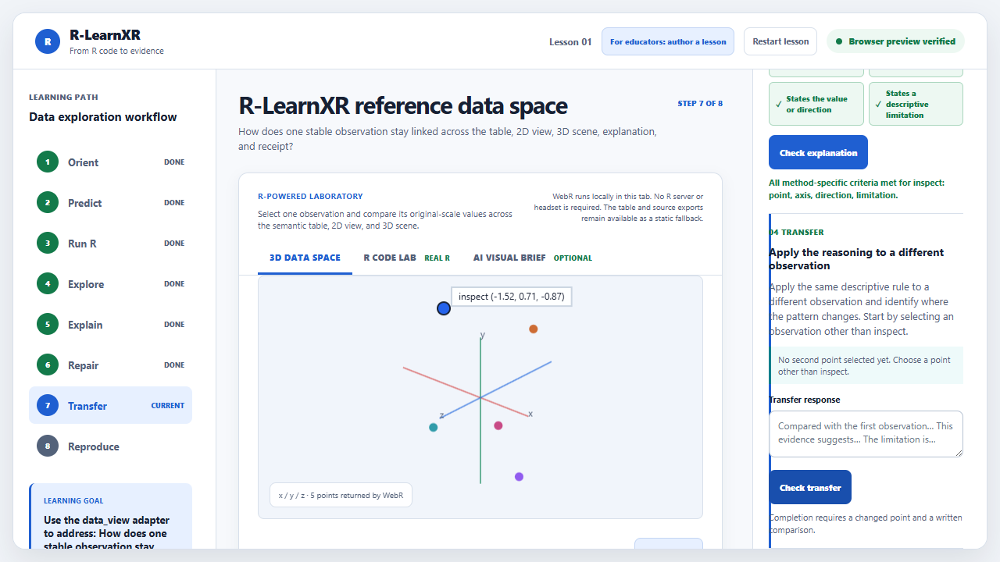
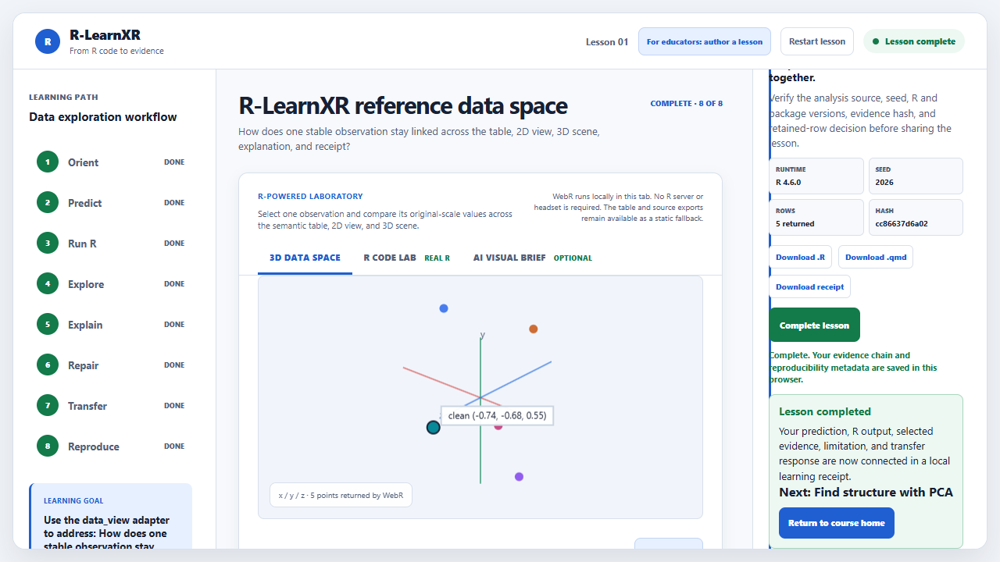

Use the browser laboratory
Open a ready lesson, make a prediction, run editable R in the tab, compare table/2D/3D evidence, and download a receipt.
This guide shows exactly what to type, what each command creates, what the result means, and where to go next. Begin as a learner in the browser, or continue in RStudio to compile your own data lesson.

You do not need RStudio to complete a lesson. You need RStudio only when you want to install the package, use your own data, or author a new lesson.
Open a ready lesson, make a prediction, run editable R in the tab, compare table/2D/3D evidence, and download a receipt.
Install the package, inspect your data structure, approve an analysis, compile the lesson, and run a strict reproducibility check.
Beginner rule: run one code block at a time. Do not move on until its “You should see” statement is true.
This route uses a local web server so browser features work consistently. The command serves files from your computer; it does not upload the lesson or your responses.
Use PowerShell or the RStudio Terminal.
git clone --branch codex/v2-evidence-compiler --single-branch https://github.com/Educatian/rlearnxr.git
Set-Location rlearnxrgit clone downloads the current Evidence Compiler branch. Set-Location moves the terminal into that project folder.
A new rlearnxr folder with README.md, R/, docs/, and examples/.
Keep this terminal open and start the local server.
Run this from inside the cloned rlearnxr folder.
python -m http.server 8772 --bind 127.0.0.1Python serves the repository only to this computer at port 8772. 127.0.0.1 means “this computer.”
Serving HTTP on 127.0.0.1 port 8772. Leave the terminal running.
Open http://127.0.0.1:8772/examples/index.html, then select Open module.
If python is not recognized, open examples/index.html directly for a static preview, or install Python and retry. Browser R execution works best through the local server.
The right companion asks what one row represents and what each variable does.

Example: “One row is one de-identified observation. The label identifies it, and x, y, z are measured coordinates.”
You are defining the unit of analysis. This prevents treating repeated events, measurements, or plotted marks as if they were independent learners.
Save a prediction before inspecting the R result.
Open R Code Lab. Read the command explanations, then choose Run R.

WebR loads R in this browser tab, executes the visible source, and returns a data frame with label, x, y, and z.
R VERIFIED, the retained row count, a deterministic seed, an artifact hash, and PASS checks.
The scene is not a hand-authored animation. It is a representation of the rows returned by the R code you just ran.
Open Table, 2D, and 3D; select the same observation in more than one view.

Use a value or direction from a selected observation, then state a limitation.

“Observation inspect has x = −1.52, which is lower than clean. This is a descriptive comparison and may not generalize beyond these observations.”
If a criterion is missing, add only the missing evidence or limitation; do not replace the claim with a longer unsupported story.
Select a different observation and apply the same comparison rule. Transfer shows whether the reasoning survives beyond the first point.
Check the R version, seed, retained rows, and hash; then download the R source, Quarto source, and receipt.

Paste these commands into the RStudio Console, not into PowerShell. Run each block with Enter. Quarto is optional for the browser lesson, but required for a strict release check.
The branch is pinned so this guide and your installed API match.
install.packages("remotes")
remotes::install_github(
"Educatian/rlearnxr",
ref = "codex/v2-evidence-compiler",
upgrade = "never"
)
library(rlearnxr)
packageVersion("rlearnxr")
Sys.which("quarto")| Command | Plain-language meaning | Move on when |
|---|---|---|
install.packages("remotes") | Installs the small helper that can install an R package from GitHub. | No installation error appears. |
install_github(...) | Downloads, builds, and installs this exact development branch without upgrading unrelated packages. | The install ends with * DONE (rlearnxr). |
library(rlearnxr) | Attaches the package functions to the current R session. | No “there is no package” error appears. |
packageVersion(...) | Confirms which package version R is actually using. | You see 2.0.0.900 or the current v2 development version. |
Sys.which("quarto") | Checks whether the Quarto command-line tool is available to R. | A path is shown, or you note that strict release checking must wait until Quarto is installed. |
This example uses R’s built-in iris data, so there is no file path to troubleshoot. PCA is selected because the question asks how four measurements vary together.
The profile describes the data; it does not make a substantive statistical decision for you.
data(iris)
profile <- profile_learning_data(
iris,
intent = "reduce"
)
profileAn rlearnxr_data_profile summarizing row count, variable types, missingness, possible identifiers, and available analysis adapters.
Your learning goal is to represent several numeric variables with fewer dimensions while preserving as much variation as possible.
Confirm that the four measurement columns are numeric, then compile the lesson.
You explicitly state the question, dimensions, and unit of analysis.
lesson <- lesson_from_data(
iris,
analysis = "prcomp",
dimensions = c(
"Sepal.Length", "Sepal.Width",
"Petal.Length", "Petal.Width"
),
question = "How do the four iris measurements vary together?",
intent = "reduce",
unit_of_analysis = "one iris flower",
title = "Iris measurement structure"
)
lessonAn rlearnxr_lesson containing PCA evidence, provenance, representations, and all eight learning tasks.
prcompIt calls R’s established PCA implementation. R-LearnXR adapts its scores, loadings, explained variance, scaling provenance, and stable IDs; it does not reimplement PCA.
Compile the specification into portable lesson files.
The compiler writes inspectable files before the browser renders them.
build <- compile_lesson(
lesson,
output_dir = "iris-pca-lesson",
overwrite = TRUE
)
check_lesson("iris-pca-lesson", strict = FALSE)
browseURL(file.path(
normalizePath("iris-pca-lesson"),
"scene", "index.html"
))| Command | What appears | What it means |
|---|---|---|
compile_lesson() | evidence.json, lesson spec, manifest, Quarto source, semantic CSV, scene files, and checks. | One R evidence object has been compiled into linked teaching representations. |
check_lesson(..., strict=FALSE) | A PASS plus any environment advisory, such as missing Quarto. | Required files, schema, provenance, accessibility fallback, and artifact links are internally consistent. |
browseURL(...) | The new lesson opens in your default browser. | You can now rehearse it using the same eight-stage learner route. |
Release gate: after Quarto is installed and Sys.which("quarto") returns a path, run check_lesson("iris-pca-lesson", strict = TRUE). In strict mode, a missing Quarto CLI is an intentional failure rather than a hidden warning.
Correct endpoint: a browser lesson plus inspectable R/Quarto/JSON/CSV artifacts. A visually plausible 3D scene alone is not a successful build.
Compiled lessons expose their source. These are the most common lines beginners will encounter.
set.seed(2026)Fixes random-number generation so resampling or clustering can be repeated under the same conditions.
data.frame(...)Creates a rectangular table in which columns are variables and rows are observations.
scale(x)Centers and scales numeric values. This changes units, so interpretation should refer to standardized coordinates.
subset(data, condition)Keeps only rows meeting a visible condition. Compare the before/after row counts before interpreting the remaining scene.
prcomp(..., scale.=TRUE)Estimates principal components after scaling. Scores locate observations; loadings describe variable contributions.
scene <- data.frame(label,x,y,z)Creates the renderer contract. The browser owns display and interaction; R owns the analytical values supplied to it.
compile_lesson() returns a build.No. The default experience is a normal browser with a semantic table, 2D view, and optional 3D scene. A headset is outside the core v2 scope.
No. RStudio is for package use and authoring. WebR runs the visible learner code locally in the browser tab.
No. Table, 2D, and 3D are representations of linked evidence. Choose the representation that best supports the task and learner; do not assume 3D is superior.
The precompiled evidence, R source, Quarto artifact, and semantic table remain available. Treat them as the authoritative fallback and retry the live run when network access is restored.
First define the unit of analysis. Use prepare_learning_events() when repeated event rows must be aggregated transparently before a learner-level analysis.
Use run_lesson_wizard() for a guided local workflow, or read the CSV and call profile_learning_data() before choosing an adapter.
All linked examples are synthetic, built into R, or already distributed with this public repository.
Open the contributor-training lesson and follow the browser route above.
Download the synthetic learning-points CSV for local practice.
Read the compact end-user quick start after completing this visual walkthrough once.
Return to the project README for package architecture, checks, and contribution routes.